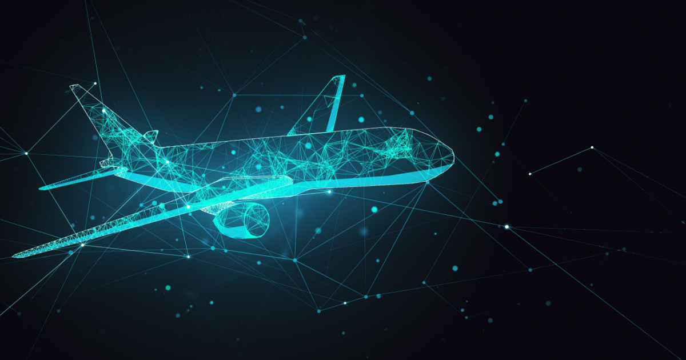

AI v letectve1/2
1. Autonómne lietadlá a drony
- Autopiloti novej generácie:
Moderné lietadlá už dnes využívajú pokročilé autopiloty, ktoré dokážu riadiť lietadlo
počas väčšiny letu. S AI môžu byť tieto systémy ešte presnejšie a spoľahlivejšie.
- Autonómne drony: AI umožňuje dronom samostatne lietať, vyhýbať sa prekážkam a vykonávať komplexné úlohy, napríklad
doručovanie zásielok, monitorovanie infraštruktúry alebo záchranné operácie.
2. Bezpečnostné systémy
- Predikcia porúch:
AI dokáže analyzovať údaje zo senzorov lietadla a predpovedať technické problémy ešte predtým,
než dôjde k ich zlyhaniu, čo zvyšuje bezpečnosť a znižuje náklady na údržbu.
Detekcia turbulencií: Pomocou strojového učenia môže AI predpovedať výskyt turbulencií a optimalizovať trasu
lietadla.
- Zabezpečenie letísk: AI sa používa na rozpoznávanie tvárí, sledovanie pohybu osôb a batožiny a identifikáciu
potenciálnych bezpečnostných hrozieb.
3. Optimalizácia prevádzky
- Efektívne plánovanie letov:
AI pomáha optimalizovať trasy lietadiel na základe poveternostných podmienok,
aktuálnej prevádzky na letiskách a spotreby paliva.
Zníženie spotreby paliva: Inteligentné algoritmy analyzujú dáta a navrhujú optimálne spôsoby šetrenia paliva počas
letu.
- Riadenie letovej prevádzky: AI môže pomáhať riadiť hustú leteckú prevádzku, čím sa znižujú meškania a riziká
kolízií.

Podcast o AI v letectve: Podcast /